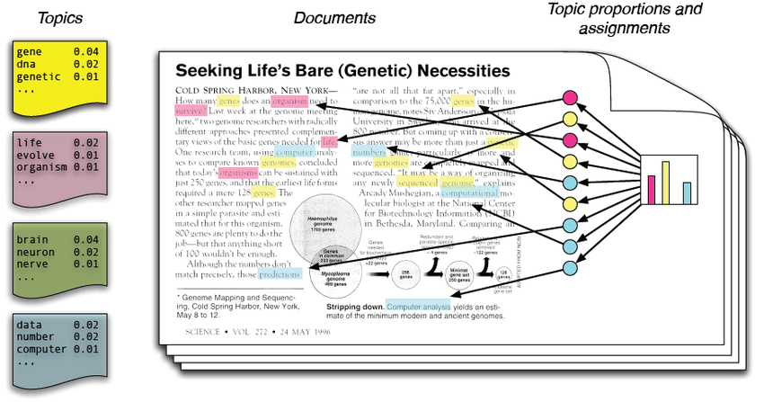
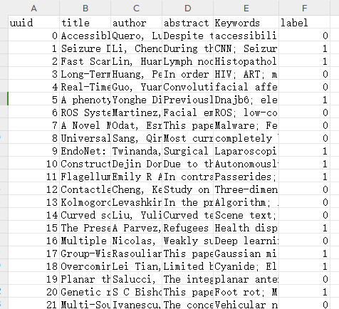
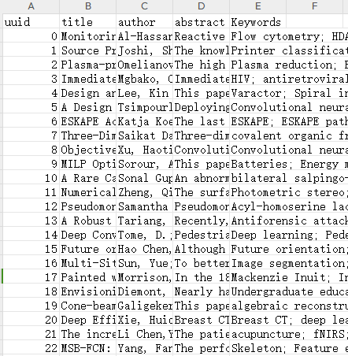

title: 【第一期AI夏令营丨自然语言处理】赛事信息
date: 2023-10-24 12:19:35
tags: NLP
categories: 【第一期AI夏令营丨自然语言处理】
### 基于论文摘要的文本分类与关键词抽取挑战赛 ：https://challenge.xfyun.cn/topic/info?type=abstract-of-the-paper&ch=ZuoaKcY

本任务分为两个子任务：
1. 从论文标题、摘要作者等信息，判断该论文是否属于医学领域的文献。
2. 从论文标题、摘要作者等信息，提取出该论文关键词。
第一个任务看作是一个文本二分类任务。机器需要根据对论文摘要等信息的理解，将论文划分为医学领域的文献和非医学领域的文献两个类别之一。第二个任务看作是一个文本关键词识别任务。机器需要从给定的论文中识别和提取出与论文内容相关的关键词。
*train.csv *部分信息如下图：

*test.csv *部分信息如下图：

训练集与测试集数据为CSV格式文件，各字段分别是标题、作者和摘要。Keywords为任务2的标签，label为任务1的标签。训练集和测试集都可以通过pandas读取。